corrfitter - Least-Squares Fit to Correlators¶
Introduction¶
This module contains tools that facilitate least-squares fits, as functions
of time t, of simulation (or other statistical) data for 2-point and
3-point correlators of the form:
Gab(t) = <b(t) a(0)>
Gavb(t,T) = <b(T) V(t) a(0)>
where T > t > 0. Each correlator is modeled using corrfitter.Corr2 for 2-point
correlators, or corrfitter.Corr3 for 3-point correlators in terms of amplitudes for
each source a, sink b, and vertex V, and the energies
associated with each intermediate state. The amplitudes and energies are
adjusted in the least-squares fit to reproduce the data; they are defined
in a shared prior (typically a dictionary).
An object of type corrfitter.CorrFitter describes a collection of correlators and is
used to fit multiple models to data simultaneously. Fitting multiple
correlators simultaneously is important if there are statistical
correlations between the correlators. Any number of correlators may be
described and fit by a single corrfitter.CorrFitter object.
We now review the basic features of corrfitter. These features are also
illustrated for real applications in a series of annotated
examples following this section. Impatient readers may wish to jump
directly to these examples.
Basic Fits¶
To illustrate, consider data for two 2-point correlators: Gaa with the
same source and sink (a), and Gab which has source a and
(different) sink b. The data are contained in a dictionary data,
where data['Gaa'] and data['Gab'] are one-dimensional arrays
containing values for Gaa(t) and Gab(t), respectively, with
t=0,1,2...63. Each array element in data['Gaa'] and data['Gab']
is a Gaussian random variable of type gvar.GVar, and specifies the mean and
standard deviation for the corresponding data point:
>>> print data['Gaa']
[0.1597910(41) 0.0542088(31) ... ]
>>> print data['Gab']
[0.156145(18) 0.102335(15) ... ]
gvar.GVars can also capture any statistical correlations between different
pieces of data.
We want to fit this data to the following formulas:
Gaa(t,N) = sum_i=0..N-1 a[i]**2 * exp(-E[i]*t)
Gab(t,N) = sum_i=0..N-1 a[i]*b[i] * exp(-E[i]*t)
Our goal is to find values for the amplitudes, a[i] and b[i], and the
energies, E[i], so that these formulas reproduce the average values for
Gaa(t,N) and Gab(t,N) that come from the data, to within the data’s
statistical errors. We use the same a[i]s and E[i]s in both
formulas. The fit parameters used by the fitter are the a[i]s and
b[i]s, as well as the differences dE[i]=E[i]-E[i-1] for i>0 and
dE[0]=E[0]. The energy differences are usually positive by construction
(see below) and are easily converted back to energies using:
E[i] = sum_j=0..i dE[j]
A typical code has the following structure:
from corrfitter import CorrFitter
data = make_data('mcfile') # user-supplied routine
models = make_models() # user-supplied routine
N = 4 # number of terms in fit functions
prior = make_prior(N) # user-supplied routine
fitter = CorrFitter(models=models)
fit = fitter.lsqfit(data=data, prior=prior) # do the fit
print_results(fit, prior, data) # user-supplied routine
We discuss each user-supplied routine in turn.
a) make_data¶
make_data('mcfile') creates the dictionary containing the data that is to
be fit. Typically such data comes from a Monte Carlo simulation. Imagine that
the simulation creates a file called 'mcfile' with layout
# first correlator: each line has Gaa(t) for t=0,1,2...63
Gaa 0.159774739530e+00 0.541793561501e-01 ...
Gaa 0.159751906801e+00 0.542054488624e-01 ...
Gaa ...
.
.
.
# second correlator: each line has Gab(t) for t=0,1,2...63
Gab 0.155764170032e+00 0.102268808986e+00 ...
Gab 0.156248435021e+00 0.102341455176e+00 ...
Gab ...
.
.
.
where each line is one Monte Carlo measurement for one or the other
correlator, as indicated by the tags at the start of each line. (Lines for
Gab may be interspersed with lines for Gaa since every line has a
tag.) The data can be analyzed using the gvar.dataset module:
import gvar as gv
def make_data(filename):
dset = gv.dataset.Dataset(filename)
return gv.dataset.avg_data(dset)
This reads the data from file into a dataset object (type
gvar.dataset.Dataset) and then computes averages for each
correlator and t, together with a covariance matrix for the set of
averages. Thus data = make_data('mcfile') creates a dictionary where
data['Gaa'] is a 1-d array of gvar.GVars obtained by averaging over the
Gaa data in the 'mcfile', and data['Gab'] is a similar array
for the Gab correlator.
b) make_models¶
make_models() identifies which correlators in the fit data are to be fit,
and specifies theoretical models (that is, fit functions) for these
correlators:
from corrfitter import Corr2
def make_models():
models = [ Corr2(datatag='Gaa', tdata=range(64), tfit=range(64),
a='a', b='a', dE='dE'),
Corr2(datatag='Gab', tdata=range(64), tfit=range(64),
a='a', b='b', dE='dE')
]
return models
For each correlator, we specify: the key used in the input data dictionary
data for that correlator (datatag); the values of t for which
results are given in the input data (tdata); the values of t to
keep for fits (tfit, here the same as the range in the input data, but
could be any subset); and fit-parameter labels for the source (a) and
sink (b) amplitudes, and for the intermediate energy-differences
(dE). Fit-parameter labels identify the parts of the prior,
discussed below, corresponding to the actual fit parameters (the labels are
dictionary keys). Here the two models, for Gaa and Gab, are
identical except for the data tags and the sinks. make_models() returns
a list of models; the only parts of the input fit data that are fit are
those for which a model is specified in make_models().
Note that if there is data for Gba(t,N) in addition to Gab(t,N), and
Gba = Gab, then the (weighted) average of the two data sets will be
fit if models[1] is replace by:
Corr2(datatag='Gab', tdata=range(64), tfit=range(64),
a=('a', None), b=('b', None), dE=('dE', None),
othertags=['Gba'])
The additional argument othertags lists other data tags that correspond
to the same physical quantity; the data for all equivalent data tags is
averaged before fitting (using lsqfit.wavg()). Alternatively (and
equivalently) one could add a third Corr2 to models for Gba,
but it is more efficient to combine it with Gab in this way if they are
equivalent.
c) make_prior¶
This routine defines the fit parameters that correspond to each fit-parameter
label used in make_models() above. It also assigns a priori values to
each parameter, expressed in terms of Gaussian random variables (gvar.GVars),
with a mean and standard deviation. The prior is built using class
gvar.BufferDict:
import gvar as gv
def make_prior(N):
prior = gvar.BufferDict() # prior = {} works too
prior['a'] = [gv.gvar(0.1, 0.5) for i in range(N)]
prior['b'] = [gv.gvar(1., 5.) for i in range(N)]
prior['dE'] = [gv.gvar(0.25, 0.25) for i in range(N)]
return prior
(gvar.BufferDict can be replaced by an ordinary Python dictionary;
it is used here because it remembers the order in which the keys are added.)
make_prior(N) associates arrays of N Gaussian random variables
(gvar.GVars) with each fit-parameter label, enough for N terms in the fit
function. These are the a priori values for the fit parameters, and they
can be retrieved using the label: setting prior=make_prior(N), for
example, implies that prior['a'][i], prior['b'][i] and
prior['dE'][i] are the a priori values for a[i], b[i] and
dE[i] in the fit functions (see above). The a priori value for each
a[i] here is set to 0.1±0.5, while that for each b[i] is
1±5:
>>> print prior['a']
[0.10(50) 0.10(50) 0.10(50) 0.10(50)]
>>> print prior['b']
[1.0(5.0) 1.0(5.0) 1.0(5.0) 1.0(5.0)]
Similarly the a priori value for each energy difference is 0.25±0.25.
(See the lsqfit documentation for further information on priors.)
d) print_results¶
The actual fit is done by fit=fitter.lsqfit(...), which also prints out
a summary of the fit results (this output can be suppressed if desired).
Further results are reported by print_results(fit, prior, data): for
example,
def print_results(fit, prior, data):
a = fit.p['a'] # array of a[i]s
b = fit.p['b'] # array of b[i]s
dE = fit.p['dE'] # array of dE[i]s
E = [sum(dE[:i+1]) for i in range(len(dE))] # array of E[i]s
print 'Best fit values:
print ' a[0] =',a[0]
print ' b[0] =',b[0]
print ' E[0] =',E[0]
print 'b[0]/a[0] =',b[0]/a[0]
outputs = {'E0':E[0], 'a0':a[0], 'b0':b[0], 'b0/a0':b[0]/a[0]}
inputs = {'a'=prior['a'], 'b'=prior['b'], 'dE'=prior['dE'],
'data'=[data[k] for k in data])
print fit.fmt_errorbudget(outputs, inputs)
The best-fit values from the fit are contained in fit.p and are accessed
using the labels defined in the prior and the corrfitter.Corr2 models. Variables like
a[0] and E[0] are gvar.GVar objects that contain means and standard
deviations, as well as information about any correlations that might exist
between different variables (which is relevant for computing functions of the
parameters, like b[0]/a[0] in this example).
The last line of print_results(fit,prior,data) prints an error budget for
each of the best-fit results for a[0], b[0], E[0] and
b[0]/a[0], which are identified in the print output by the labels
'a0', 'b0', 'E0' and 'b0/a0', respectively. The error for any
fit result comes from uncertainties in the inputs — in particular, from the
fit data and the priors. The error budget breaks the total error for a
result down into the components coming from each source. Here the sources are
the a priori errors in the priors for the 'a' amplitudes, the 'b'
amplitudes, and the 'dE' energy differences, as well as the errors in
the fit data data. These sources are labeled in the print output by
'a', 'b', 'dE', and 'data', respectively. (See the
gvar/lsqfit tutorial for further details on partial standard
deviations and gvar.fmt_errorbudget().)
Plots of the fit data divided by the fit function, for each correlator, are
displayed by calling fitter.display_plots() provided the matplotlib
module is present.
Faster Fits¶
Good fits often require fit functions with several exponentials and many parameters. Such fits can be costly. One strategy that can speed things up is to use fits with fewer terms to generate estimates for the most important parameters. These estimates are then used as starting values for the full fit. The smaller fit is usually faster, because it has fewer parameters, but the fit is not adequate (because there are too few parameters). Fitting the full fit function is usually faster given reasonable starting estimates, from the smaller fit, for the most important parameters. Continuing with the example from the previous section, the code
data = make_data('mcfile')
fitter = CorrFitter(models=make_models())
p0 = None
for N in [1,2,3,4,5,6,7,8]:
prior = make_prior(N)
fit = fitter.lsqfit(data=data, prior=prior, p0=p0)
print_results(fit, prior, data)
p0 = fit.pmean
does fits using fit functions with N=1...8 terms. Parameter mean-values
fit.pmean from the fit with N exponentials are used as starting values
p0 for the fit with N+1 exponentials, hopefully reducing the time
required to find the best fit for N+1.
Faster Fits — Postive Parameters¶
Priors used in corrfitter.CorrFitter assign an a priori Gaussian/normal distribution
to each parameter. It is possible instead to assign a log-normal distribution,
which forces the corresponding parameter to be positive. Consider, for
example, energy parameters labeled by 'dE' in the definition of a model
(e.g., Corr2(dE='dE',...)). To assign log-normal distributions to these
parameters, include their logarithms in the prior and label the logarithms
with 'logdE' or 'log(dE)': for
example, in make_prior(N) use
prior['logdE'] = [gv.log(gv.gvar(0.25, 0.25)) for i in range(N)]
instead of prior['dE'] = [gv.gvar(0.25, 0.25) for i in range(N)]. The
fitter then uses the logarithms as the fit parameters. The original 'dE'
parameters are recovered (automatically) inside the fit function from
exponentials of the 'logdE' fit parameters.
Using log-normal distributions where possible can significantly improve the
stability of a fit. This is because otherwise the fit function typically has
many symmetries that lead to large numbers of equivalent but different best
fits. For example, the fit functions Gaa(t,N) and Gab(t,N) above are
unchanged by exchanging a[i], b[i] and E[i] with a[j],
b[j] and E[j] for any i and j. We can remove this degeneracy
by using a log-normal distribution for the dE[i]s since this guarantees
that all dE[i]s are positive, and therefore that E[0],E[1],E[2]...
are ordered (in decreasing order of importance to the fit at large t).
Another symmetry of Gaa and Gab, which leaves both fit functions
unchanged, is replacing a[i],b[i] by -a[i],-b[i]. Yet another is to
add a new term to the fit functions with a[k],b[k],dE[k] where a[k]=0
and the other two have arbitrary values. Both of these symmetries can be
removed by using a log-normal distribution for the a[i] priors, thereby
forcing all a[i]>0.
The log-normal distributions for the a[i] and dE[i] are introduced
into the code example above by changing the corresponding labels in
make_prior(N), and taking logarithms of the corresponding prior values:
import gvar as gv
def make_models(): # same as before
models = [ Corr2(datatag='Gaa', tdata=range(64), tfit=range(64),
a='a', b='a', dE='dE'),
Corr2(datatag='Gab', tdata=range(64), tfit=range(64),
a='a', b='b', dE='dE')
]
return models
def make_prior(N):
prior = gvar.BufferDict() # prior = {} works too
prior['loga'] = [gv.log(gv.gvar(0.1, 0.5)) for i in range(N)]
prior['b'] = [gv.gvar(1., 5.) for i in range(N)]
prior['logdE'] = [gv.log(gv.gvar(0.25, 0.25)) for i in range(N)]
return prior
This replaces the original fit parameters, a[i] and dE[i], by new fit
parameters, log(a[i]) and log(dE[i]). The a priori distributions for
the logarithms are Gaussian/normal, with priors of log(0.1±0.5) and
log(0.25±0.25) for the log(a)s and log(dE)s respectively.
Note that the labels are unchanged here in make_models(). It is
unnecessary to change labels in the models; corrfitter.CorrFitter will automatically
connect the modified terms in the prior with the appropriate terms in the
models. This allows one to switch back and forth between log-normal and normal
distributions without changing the models — only the names in the prior
need be changed. corrfitter.CorrFitter also supports “sqrt-normal” distributions,
which are indicated by 'sqrt' at the start of a parameter-name in the
prior; the actual parameter in the fit function is the square of this fit-
parameter, and so is again positive.
Note also that only a few lines in print_results(fit,prior,data), above,
would change had we used log-normal priors for a and dE:
...
a = fit.transformed_p['a']) # array of a[i]s
...
dE = fit.transformed_p['dE'] # array of dE[i]s
...
inputs = {'loga':prior['loga'], 'b':prior['b'], 'logdE':fit.prior['logdE'],
'data':[data[k] for k in data]}
...
Here fit.transformed_p contains the best-fit parameter values from the
fitter, in addition to the exponentials of the 'loga' and 'logdE'
parameters.
Finally note that another option for stabilizings fits involving many
sources and sinks is to generate priors for the
fit amplitudes and energies using corrfitter.EigenBasis.
Faster Fits — Marginalization¶
Often we care only about parameters in the leading term of the fit function, or just a few of the leading terms. The non-leading terms are needed for a good fit, but we are uninterested in the values of their parameters. In such cases the non-leading terms can be absorbed into the fit data, leaving behind only the leading terms to be fit (to the modified fit data) — non-leading parameters are, in effect, integrated out of the analysis, or marginalized. The errors in the modified data are adjusted to account for uncertainties in the marginalized terms, as specified by their priors. The resulting fit function has many fewer parameters, and so the fit can be much faster.
Continuing with the example in Faster Fits, imagine that Nmax=8
terms are needed to get a good fit, but we only care about parameter values
for the first couple of terms. The code from that section can be modified to
fit only the leading N terms where N<Nmax, while incorporating
(marginalizing) the remaining, non-leading terms as corrections to the data:
Nmax = 8
data = make_data('mcfile')
models = make_models()
fitter = CorrFitter(models=make_models())
prior = make_prior(Nmax) # build priors for Nmax terms
p0 = None
for N in [1,2,3]:
fit = fitter.lsqfit(data=data, prior=prior, p0=p0, nterm=N) # fit N terms
print_results(fit, prior, data)
p0 = fit.pmean
Here the nterm parameter in fitter.lsqfit specifies how many terms are
used in the fit functions. The prior specifies Nmax terms in all, but only
parameters in nterm=N terms are varied in the fit. The remaining terms
specified by the prior are automatically incorporated into the fit data by
corrfitter.CorrFitter.
Remarkably this method is usually as accurate with N=1 or 2 as a full
Nmax-term fit with the original fit data; but it is much faster. If this
is not the case, check for singular priors, where the mean is much smaller
than the standard deviation. These can lead to singularities in the covariance
matrix for the corrected fit data. Such priors are easily fixed: for example,
use gvar.gvar(0.1,1.) rather than gvar.gvar(0.0,1.).
In some situations an svd cut (see below) can also
help.
Faster Fits — Chained Fits¶
Large complicated fits, where lots of models and data are fit simultaneously,
can take a very long time. This is especially true if there are strong
correlations in the data. Such correlations can also cause problems from
numerical roundoff errors when the inverse of the data’s covariance matrix is
computed for the chi**2 function, requiring large svd cuts which can
degrade precision (see below). An alternative approach is to use chained
fits. In a chained fit, each model is fit by itself in sequence, but with the
best-fit parameters from each fit serving as priors for fit parameters in the
next fit. All parameters from one fit become fit parameters in the next,
including those parameters that are not explicitly needed by the next fit
(since they may be correlated with the input data for the next fit or with its
priors). Statistical correlations between data/priors from different models
are preserved throughout (approximately).
The results from a chained fit are identical to a standard simultaneous fit in the limit of large statistics (that is, in the Gaussian limit), but a chained fit never involves fitting more than a single correlator at a time. Single-correlator fits are usually much faster than simultaneous multi-correlator fits, and roundoff errors (and therefore svd cuts) are much less of a problem. Consequently chained fits can be more accurate in practice than conventional simultaneous fits, especially for high-statistics data.
Converting to chained fits is trivial: simply replace fitter.lsqfit(...)
by fitter.chained_lsqfit(...). The output from this function represents
the results for the entire chain of fits, and so can be used in exactly the
same way as the output from fitter.lsqfit() (and is usually quite
similar, to within statistical errors). Results from the different links in
the chain — that is, from the fits for individual models — can be accessed
after the fit using fitter.fit.fits[datatag] where datatag is the
data tag for the model of interest.
Setting parameter parallel=True in fitter.chained_lsqfit(...) makes the
fits for each model independent of each other. Each correlator is
fit separately, but nothing is passed from one fit to the next. In particular,
each fit uses the input prior. Parallel fits can be better than chained
fits in situations where different models share few or no parameters.
It is sometimes useful to combine chained and parallel fits. This is done by using a nested list of models. For example, setting
models = [m1, m2, [m3a,m3b], m4]
with parallel=False (the default) in fitter.chained_lsqfit causes
the following chain of fits:
m1 -> m2 -> (parallel fit of [m3a,m3b]) -> m4
Here the output from m1 is used in the prior for fit m2, and the
output from m2 is used as the prior for a parallel fit of m3a
and m3b together — that is, m3a and m3b are not chained,
but rather are fit in parallel with each using a prior from fit m2. The
result of the parallel fit of [m3a,m3b] is used as the prior for m4.
Different levels of nesting in the list of
models alternate between chained and parallel fits.
It is sometimes useful to follow a chained fit with an ordinary fit, but using the best-fit parameters from the chained fit as the prior for the ordinary fit: for example,
fit = fitter.chained_lsqfit(data=data, prior=prior)
fit = fitter.lsqfit(data=data, prior=fit.p)
The second fit should,
in principle, have no effect on the results since it adds no new
information. In some cases, however, it polishes the results by making small
(compared to the errors) corrections that tighten up the overall fit. It is
generally fairly fast since the prior (fit.p) is relatively narrow.
It is also possible to polish fits using fitter.chained_lsqfit, with
parameters parallel=True and flat=True, rather than using
fitter.lsqfit. This can be faster for very large fits.
Variations¶
Any 2-point correlator can be turned into a periodic function of t by
specifying the period through parameter tp. Doing so causes the
replacement (for tp>0)
exp(-E[i]*t) -> exp(-E[i]*t) + exp(-E[i]*(tp-t))
in the fit function. If tp is negative, the function is replaced by
an anti-periodic function with period abs(tp) and (for tp<0):
exp(-E[i]*t) -> exp(-E[i]*t) - exp(-E[i]*(abs(tp)-t))
Also (or alternatively) oscillating terms can be added to the fit by
modifying parameter s and by specifying sources, sinks and energies for
the oscillating pieces. For example, one might want to replace the sum of
exponentials with two sums
sum_i a[i]**2 * exp(-E[i]*t) - sum_i ao[i]**2 (-1)**t * exp(-Eo[i]*t)
in a (nonperiodic) fit function. Then an appropriate model would be, for example,
Corr2(datatag='Gaa', tdata=range(64), tfit=range(64),
a=('a','ao'), b=('a','ao'), dE=('logdE','logdEo'), s=(1,-1))
where ao and dEo refer to additional fit parameters describing
the oscillating component. In general parameters for amplitudes and
energies can be tuples with two components: the first describing normal
states, and the second describing oscillating states. To omit one or the
other, put None in place of a label. Parameter s[0] is an overall
factor multiplying the non-oscillating terms, and s[1] is the
corresponding factor for the oscillating terms.
Highly correlated data can lead to problems from numerical roundoff errors,
particularly where the fit code inverts the covariance matrix when
constructing the chi**2 function. Such problems show up as unexpectedly
large chi**2 or fits that stall and appear never to converge. Such
situations are usually improved by introducing an svd cut: for example,
fit = fitter.lsqfit(data=data, prior=prior, p0=p0, svdcut=1e-4)
Introducing an svd cut increases the effective errors and so is a
conservative move. For more information about svd cuts see the lsqfit
tutorial and documentation. Parameter svdcut is used to
specify an svd cut.
Very Fast (But Limited) Fits¶
At large t, correlators are dominated by the term with the smallest
E, and often it is only the parameters in that leading term that are
needed. In such cases there is a very fast analysis that is often almost
as accurate as a full fit. An example is:
from corrfitter import fastfit
data = make_data('mcfile') # user-supplied routine - fit data
N = 10 # number of terms in fit functions
prior = make_prior(N) # user-supplied routine - fit prior
model = Corr2(a=..., b=..., ...) # create model describing correlator
fit = fastfit(data=data, prior=prior, model=model)
print('E[0] =', fit.E) # E[0]
print('a[0]*b[0] =', fit.ampl) # a[0]*b[0]
print('chi2/dof =', fit.chi2/fit.dof) # good fit if of order 1 or less
print('Q =', fit.Q) # good fit if Q bigger than about 0.1
fastfit estimates E[0] by using the prior, in effect, to
remove (marginalize) all terms from the correlator other than the
E[0] term: so the data Gdata(t) for the correlator is replaced by,
for example,
Gdata(t) - sum_i=1..N-1 a[i]*b[i] * exp(-E[i]*t)
where a[i], b[i], and E[i] for i>0 are replaced by their
values in the prior. The modified prior is then fit by a single term,
a[0] * b[0] * exp(-E[0]*t), which means that a fit is not necessary
(since the functional form is so simple). It is important to check the
chi**2 of the fit, to make sure the fit is good. If it is not, try
restricting model.tfit to larger ts (fastfit averages
estimates from all ts in model.tfit).
The marginalization of terms with larger Es allows the code to use
information from much smaller ts than otherwise, increasing precision.
It also quantifies the uncertainty caused by the existence of these terms.
This simple analysis is a special case of the more general marginalization
strategy discussed in Faster Fits, above.
3-Point Correlators¶
Correlators Gavb(t,T) = <b(T) V(t) a(0)> can also be included in fits
as functions of t. In the illustration above, for example, we might
consider additional Monte Carlo data describing a form factor with the
same intermediate states before and after V(t). Assuming the data is
tagged by aVbT15 and describes T=15, the corresponding entry in the
collection of models might then be:
Corr3(datatag='aVbT15', T=15, tdata=range(16), tfit=range(16),
Vnn='Vnn', # parameters for V
a='a', dEa='dE', # parameters for a->V
b='b', dEb='dE', # parameters for V->b
)
This models the Monte Carlo data for the 3-point function using the following formula:
sum_i,j a[i] * exp(-Ea[i]*t) * Vnn[i,j] * b[j] * exp(-Eb[j]*t)
where the Vnn[i,j]s are new fit parameters related to a->V->b form
factors. Obviously multiple values of T can be studied by including
multiple corrfitter.Corr3 models, one for each value of T. Either or both of the
initial and final states can have oscillating components (include sa
and/or sb), or can be periodic (include tpa and/or tpb). If
there are oscillating states then additional Vs must be specified:
Vno connecting a normal state to an oscillating state, Von
connecting oscillating to normal states, and Voo connecting oscillating
to oscillating states.
There are two cases that require special treatment. One is when
simultaneous fits are made to a->V->b and b->V->a. Then the
Vnn, Vno, etc. for b->V->a are the (matrix) transposes of
the the same matrices for a->V->b. In this case the models for the two
would look something like:
models = [
...
Corr3(datatag='aVbT15', T=15, tdata=range(16), tfit=range(16),
Vnn='Vnn', Vno='Vno', Von='Von', Voo='Voo',
a=('a','ao'), dEa=('dE','dEo'), sa=(1,-1), # a->V
b=('b','bo'), dEb=('dE','dEo'), sb=(1,-1) # V->b
),
Corr3(datatag='bVaT15', T=15, tdata=range(16), tfit=range(16),
Vnn='Vnn', Vno='Vno', Von='Von', Voo='Voo', transpose_V=True,
a=('b','bo'), dEa=('dE','dEo'), sa=(1,-1), # b->V
b=('a','ao'), dEb=('dE','dEo'), sb=(1,-1) # V->a
),
...
]
The same Vs are specified for the second correlator, but setting
transpose_V=True means that the transpose of each matrix is used
in the fit for that correlator.
The second special case is for fits to a->V->a where source and sink
are the same. In that case, Vnn and Voo are symmetric matrices, and
Von is the transpose of Vno. The model for such a case would look
like:
Corr3(datatag='aVbT15', T=15, tdata=range(16), tfit=range(16),
Vnn='Vnn', Vno='Vno', Von='Vno', Voo='Voo', symmetric_V=True,
a=('a','ao'), dEa=('dE', 'dEo'), sa=(1, -1), # a->V
b=('a','ao'), dEb=('dE', 'dEo'), sb=(1, -1) # V->a
)
Here Vno and Von are set equal to the same matrix, but specifying
symmetric_V=True implies that the transpose will be used for Von.
Furthermore Vnn and Voo are symmetric matrices when
symmetric_V==True and so only the upper part of each matrix is needed.
In this case Vnn and Voo are treated as one-dimensional arrays with
N(N+1)/2 elements corresponding to the upper parts of each matrix,
where N is the number of exponentials (that is, the number of
a[i]s).
Testing Fits with Simulated Data¶
Large fits are complicated and often involve nontrivial choices about
algorithms (e.g., chained fits versus regular fits), priors, and
svd cuts — choices that affect the values and errors for the fit
parameters. In such situations it is often a good idea to test the
fit protocol that has been selected. This can be done by fitting simulated
data. Simulated data looks almost identical to the original fit
data but has means that have been adjusted to correspond to fluctuations
around a correlator with known (before the fit) parameter values: p=pexact.
The corrfitter.CorrFitter iterator simulated_data_iter creates any number of
different simulated data sets of this kind. Fitting any of these with
a particular fit protocol tests the reliability of that protocol since
the fit results should agree with pexact
to within the (simulated) fit’s errors. One or two fit simulations of this
sort are usually enough to establish the validity of a protocol. It is also
easy to compare the performance of different fit options by applying these in
fits of simulated data, again because we know the correct answers (pexact)
ahead of time.
Typically one obtains reasonable values for pexact from a fit to the
real data. Assuming these have been dumped into a file named "pexact_file"
(using, for example, fit.dump_pmean("pexact_file")), a testing script
might look something like:
import gvar as gv
import lsqfit
import corrfitter
def main():
dataset = gv.dataset.Dataset(...) # from original fit code
fitter = corrfitter.CorrFitter( # from original fit code
models = make_models(...),
prior = make_prior(...),
...
)
n = 2 # number of simulations
pexact = lsqfit.nonlinear_fit.load_parameters("pexact_file")
for sdata in fitter.simulated_data_iter(n, dataset, pexact=pexact):
# sfit = fit to the simulated data sdata
sfit = fitter.lsqfit(data=sdata, p0=pexact, prior=prior, svdcut=..., ...)
... check that sfit.p values agree with pexact to within sfit.psdev ...
Simulated fits provide an alternative to a bootstrap analysis (see next
section). By collecting results from many simulated fits, one can test whether
or not fit results are distributed in Gaussian distributions around pexact,
with widths that equal the standard deviations from the fit (fit.psdev
or sfit.psdev).
Fit simulations are particularly useful for setting svd cuts. Given
a set of approximate parameter values to use for pexact, it is easy
to run fits with a range of svd cuts to see how small svdcut
can be made before the parameters of interest deviate too far from pexact.
Bootstrap Analyses¶
A bootstrap analysis gives more robust error estimates for fit parameters and functions of fit parameters than the conventional fit when errors are large, or fluctuations are non-Gaussian. A typical code looks something like:
import gvar as gv
import gvar.dataset as ds
from corrfitter import CorrFitter
# fit
dset = ds.Dataset('mcfile')
data = ds.avg_data(dset) # create fit data
fitter = Corrfitter(models=make_models())
N = 4 # number of terms in fit function
prior = make_prior(N)
fit = fitter.lsqfit(prior=prior, data=data) # do standard fit
print 'Fit results:'
print 'a',exp(fit.p['loga']) # fit results for 'a' amplitudes
print 'dE',exp(fit.p['logdE']) # fit results for 'dE' energies
...
...
# bootstrap analysis
print 'Bootstrap fit results:'
nbootstrap = 10 # number of bootstrap iterations
bs_datalist = (ds.avg_data(d) for d in ds.bootstrap_iter(dset, nbootstrap))
bs = ds.Dataset() # bootstrap output stored in bs
for bs_fit in fitter.bootstrap_iter(bs_datalist): # bs_fit = lsqfit output
p = bs_fit.pmean # best fit values for current bootstrap iteration
bs.append('a', exp(p['loga'])) # collect bootstrap results for a[i]
bs.append('dE', exp(p['logdE']))# collect results for dE[i]
... # include other functions of p
...
bs = ds.avg_data(bs, bstrap=True) # medians + error estimate
print 'a', bs['a'] # bootstrap result for 'a' amplitudes
print 'dE', bs['dE'] # bootstrap result for 'dE' energies
....
This code first prints out the standard fit results for the 'a' amplitudes
and 'dE' energies. It then makes 10 bootstrap copies of the original
input data, and fits each using the best-fit parameters from the original fit
as the starting point for the bootstrap fit. The variation in the best-fit
parameters from fit to fit is an indication of the uncertainty in those
parameters. This example uses a gvar.dataset.Dataset object bs to
accumulate the results from each bootstrap fit, which are computed using the
best-fit values of the parameters (ignoring their standard deviations). Other
functions of the fit parameters could be included as well. At the end
avg_data(bs, bstrap=True) finds median values for each quantity in
bs, as well as a robust estimate of the uncertainty (to within 30% since
nbootstrap is only 10).
The list of bootstrap data sets bs_datalist can be omitted in this example
in situations where the input data has high statistics. Then the bootstrap
copies are generated internally by fitter.bootstrap_iter() from the
means and covariance matrix of the input data (assuming Gaussian statistics).
Implementation¶
corrfitter.CorrFitter allows models to specify how many exponentials to include in the
fit function (using parameters nterm, nterma and ntermb). If that
number is less than the number of exponentials specified by the prior, the
extra terms are incorporated into the fit data before fitting. The default
procedure is to multiply the data by G(t,p,N)/G(t,p,max(N,Nmax)) where:
G(p,t,N) is the fit function with N terms for parameters p and
time t; N is the number of exponentials specified in the models;
Nmax is the number of exponentials specified in the prior; and here
parameters p are set equal to their values in the prior (correlated
gvar.GVars).
An alternative implementation for the data correction is to add
G(t,p,N)-G(t,p,max(N,Nmax)) to the data. This implementation is selected
when parameter ratio in corrfitter.CorrFitter is set to False. Results are
similar to the other implementation.
Background information on the some of the fitting strategies used by
corrfitter.CorrFitter can be found by doing a web searches for “hep-lat/0110175”,
“arXiv:1111.1363”, and ”:arXiv:1406.2279” (appendix). These are papers by
G.P. Lepage and collaborators whose published versions are: G.P. Lepage et al,
Nucl.Phys.Proc.Suppl. 106 (2002) 12-20; K. Hornbostel et al,
Phys.Rev. D85 (2012) 031504; and C. Bouchard et al, ...
Correlator Model Objects¶
Correlator objects describe theoretical models that are fit to correlator data by varying the models’ parameters.
A model object’s parameters are specified through priors for the fit. A model assigns labels to each of its parameters (or arrays of related parameters), and these labels are used to identify the corresponding parameters in the prior. Parameters can be shared by more than one model object.
A model object also specifies the data that it is to model. The data is
identified by the data tag that labels it in the input file or gvar.dataset.Dataset.
-
class
corrfitter.Corr2(datatag, tdata, tfit, a, b, dE, s=1.0, tp=None, othertags=None)¶ Two-point correlators
Gab(t) = <b(t) a(0)>.corrfitter.Corr2models thetdependence of a 2-point correlatorGab(t)usingGab(t) = sn * sum_i an[i]*bn[i] * fn(En[i], t) + so * sum_i ao[i]*bo[i] * fo(Eo[i], t)where
snandsoare typically-1,0, or1andfn(E, t) = exp(-E*t) + exp(-E*(tp-t)) # tp>0 -- periodic or exp(-E*t) - exp(-E*(-tp-t))# tp<0 -- anti-periodic or exp(-E*t) # if tp is None (nonperiodic) fo(E, t) = (-1)**t * fn(E, t)The fit parameters for the non-oscillating piece of
Gab(first term) arean[i],bn[i], anddEn[i]where:dEn[0] = En[0] > 0 dEn[i] = En[i]-En[i-1] > 0 (for i>0)
and therefore
En[i] = sum_j=0..i dEn[j]. The fit parameters for the oscillating pied are defined analogously:ao[i],bo[i], anddEo[i].The fit parameters are specified by the keys corresponding to these parameters in a dictionary of priors supplied by
corrfitter.CorrFitter. The keys are strings and are also used to access fit results. Any key that begins with “log” is assumed to refer to the logarithm of the parameter in question (that is, the exponential of the fit-parameter is used in the formula forGab(t).) This is useful for forcingan,bnand/ordEto be positive.When
tp is not Noneand positive, the correlator is assumed to be symmetrical abouttp/2, withGab(t)=Gab(tp-t). Data fromt>tp/2is averaged with the corresponding data fromt<tp/2before fitting. Whentpis negative, the correlator is assumed to be anti-symetrical about-tp/2.Parameters: - datatag (string) – Key used to access correlator data in the input data
dictionary (see
corrfitter.CorrFitter).data[self.datatag]is (1-d) array containing the correlator values (gvar.GVars) ifdatais the input data. - a (string, or two-tuple of strings and/or
None) – Key identifying the fit parameters for the source amplitudesanin the dictionary of priors provided bycorrfitter.CorrFitter; or a two-tuple of keys for the source amplitudes(an, ao). The corresponding values in the dictionary of priors are (1-d) arrays of prior values with one term for eachan[i]orao[i]. Replacing either key byNonecauses the corresponding term to be dropped from the fit function. These keys are used to label the corresponding parameter arrays in the fit results as well as in the prior. - b (string, or two-tuple of strings and/or
None) – Same asself.abut for the sinks(bn, bo)instead of the sources(an, ao). - dE (string, or two-tuple of strings and/or
None) – Key identifying the fit parameters for the energy differencesdEnin the dictionary of priors provided bycorrfitter.CorrFitter; or a two-tuple of keys for the energy differences(dEn, dEo). The corresponding values in the dictionary of priors are (1-d) arrays of prior values with one term for eachdEn[i]ordEo[i]. Replacing either key byNonecauses the corresponding term to be dropped from the fit function. These keys are used to label the corresponding parameter arrays in the fit results as well as in the prior. - s (number or two-tuple of numbers) – Overall factor
sn, or two-tuple of overall factors(sn, so). - tdata (list of integers) – The
ts corresponding to data entries in the input data. Note thatlen(self.tdata) == len(data[self.datatag])is required ifdatais the input data dictionary. - tfit (list of integers) – List of
ts to use in the fit. Only data with thesets (all of which should be intdata) is used in the fit. - tp (integer or
None) – If notNoneand positive, the correlator is assumed to be periodic withGab(t)=Gab(tp-t). If negative, the correlator is assumed to be anti-periodic withGab(t)=-Gab(-tp-t). Settingtp=Noneimplies that the correlator is not periodic, but rather continues to fall exponentially astis increased indefinitely. - othertags (sequence of strings) – List of additional data tags for data to be
averaged with the
self.datatagdata before fitting.
-
builddata(data)¶ Assemble fit data from dictionary
data.Extracts parts of array
data[self.datatag]that are needed for the fit, as specified byself.tpandself.tfit. The entries in the (1-D) arraydata[self.datatag]are assumed to begvar.GVars and correspond to thet``s in ``self.tdata.
-
buildprior(prior, nterm)¶ Create fit prior by extracting relevant pieces of
prior.Priors for the fit parameters, as specificied by
self.aetc., are copied frompriorinto a new dictionary for use by the fitter. If a key"XX"cannot be found inprior, thebuildpriorlooks for one of"logXX","log(XX)","sqrtXX", or"sqrt(XX)"and includes the corresponding prior instead.The number of terms kept in each part of the fit can be specified using
nterm = (n, no)wherenis the number of non-oscillating terms andnois the number of oscillating terms. Settingnterm = Nonekeeps all terms.
-
fitfcn(p, nterm=None, t=None)¶ Return fit function for parameters
p.
- datatag (string) – Key used to access correlator data in the input data
dictionary (see
-
class
corrfitter.Corr3(datatag, T, tdata, tfit, Vnn, a, b, dEa, dEb, sa=1.0, sb=1.0, Vno=None, Von=None, Voo=None, transpose_V=False, symmetric_V=False, tpa=None, tpb=None, othertags=None)¶ Three-point correlators
Gavb(t, T) = <b(T) V(t) a(0)>.corrfitter.Corr3models thetdependence of a 3-point correlatorGavb(t, T)usingGavb(t, T) = sum_i,j san*an[i]*fn(Ean[i],t)*Vnn[i,j]*sbn*bn[j]*fn(Ebn[j],T-t) +sum_i,j san*an[i]*fn(Ean[i],t)*Vno[i,j]*sbo*bo[j]*fo(Ebo[j],T-t) +sum_i,j sao*ao[i]*fo(Eao[i],t)*Von[i,j]*sbn*bn[j]*fn(Ebn[j],T-t) +sum_i,j sao*ao[i]*fo(Eao[i],t)*Voo[i,j]*sbo*bo[j]*fo(Ebo[j],T-t)
where
fn(E, t) = exp(-E*t) + exp(-E*(tp-t)) # tp>0 -- periodic or exp(-E*t) - exp(-E*(-tp-t))# tp<0 -- anti-periodic or exp(-E*t) # if tp is None (nonperiodic) fo(E, t) = (-1)**t * fn(E, t)The fit parameters for the non-oscillating piece of
Gavb(first term) areVnn[i,j],an[i],bn[j],dEan[i]anddEbn[j]where, for example:dEan[0] = Ean[0] > 0 dEan[i] = Ean[i]-Ean[i-1] > 0 (for i>0)
and therefore
Ean[i] = sum_j=0..i dEan[j]. The parameters for the other terms are similarly defined.Parameters: - datatag (string) – Tag used to label correlator in the input
gvar.dataset.Dataset. - a (string, or two-tuple of strings or
None) – Key identifying the fit parameters for the source amplitudesan, fora->V, in the dictionary of priors provided bycorrfitter.CorrFitter; or a two-tuple of keys for the source amplitudes(an, ao). The corresponding values in the dictionary of priors are (1-d) arrays of prior values with one term for eachan[i]orao[i]. Replacing either key byNonecauses the corresponding term to be dropped from the fit function. These keys are used to label the corresponding parameter arrays in the fit results as well as in the prior. - b (string, or two-tuple of strings or
None) – Same asself.aexcept for sink amplitudes(bn, bo)forV->brather than for(an, ao). - dEa (string, or two-tuple of strings or
None) – Fit-parameter label fora->Vintermediate-state energy differencesdEan, or two-tuple of labels for the differences(dEan,dEao). Each label represents an array of energy differences. Replacing either label byNonecauses the corresponding term in the correlator function to be dropped. These keys are used to label the corresponding parameter arrays in the fit results as well as in the prior. - dEb (string, or two-tuple of strings or
None) – Fit-parameter label forV->bintermediate-state energy differencesdEbn, or two-tuple of labels for the differences(dEbn,dEbo). Each label represents an array of energy differences. Replacing either label byNonecauses the corresponding term in the correlator function to be dropped. These keys are used to label the corresponding parameter arrays in the fit results as well as in the prior. - sa (number, or two-tuple of numbers) – Overall factor
sanfor the non-oscillatinga->Vterms in the correlator, or two-tuple containing the overall factors(san,sao)for the non-oscillating and oscillating terms. - sb (number, or two-tuple of numbers) – Overall factor
sbnfor the non-oscillatingV->bterms in the correlator, or two-tuple containing the overall factors(sbn,sbo)for the non-oscillating and oscillating terms. - Vnn (string or
None) – Fit-parameter label for the matrix of current matrix elementsVnn[i,j]connecting non-oscillating states. Labels that begin with “log” indicate that the corresponding matrix elements are replaced by their exponentials; these parameters are logarithms of the corresponding matrix elements, which must then be positive. - Vno (string or
None) – Fit-parameter label for the matrix of current matrix elementsVno[i,j]connecting non-oscillating to oscillating states. Labels that begin with “log” indicate that the corresponding matrix elements are replaced by their exponentials; these parameters are logarithms of the corresponding matrix elements, which must then be positive. - Von (string or
None) – Fit-parameter label for the matrix of current matrix elementsVon[i,j]connecting oscillating to non-oscillating states. Labels that begin with “log” indicate that the corresponding matrix elements are replaced by their exponentials; these parameters are logarithms of the corresponding matrix elements, which must then be positive. - Voo (string or
None) – Fit-parameter label for the matrix of current matrix elementsVoo[i,j]connecting oscillating states. Labels that begin with “log” indicate that the corresponding matrix elements are replaced by their exponentials; these parameters are logarithms of the corresponding matrix elements, which must then be positive. - transpose_V (boolean) – If
True, the transposeV[j,i]is used in place ofV[i,j]for each current matrix element in the fit function. This is useful for doing simultaneous fits toa->V->bandb->V->a, where the current matrix elements for one are the transposes of those for the other. Default value isFalse. - symmetric_V (boolean) –
If
True, the fit function fora->V->bis unchanged (symmetrical) under the the interchange ofaandb. ThenVnnandVooare square, symmetric matrices withV[i,j]=V[j,i]and their priors are one-dimensional arrays containing only elementsV[i,j]withj>=iin the following layout:[V[0,0],V[0,1],V[0,2]...V[0,N], V[1,1],V[1,2]...V[1,N], V[2,2]...V[2,N], . . . V[N,N]]Furthermore the matrix specified for
Vonis transposed before being used by the fitter; normally the matrix specified forVonis the same as the matrix specified forVnowhen the amplitude is symmetrical. Default value isFalse. - tdata (list of integers) – The
ts corresponding to data entries in the inputgvar.dataset.Dataset. - tfit (list of integers) – List of
ts to use in the fit. Only data with thesets (all of which should be intdata) is used in the fit. - tpa (integer or
None) – If notNoneand positive, thea->Vcorrelator is assumed to be periodic with periodtpa. If negative, the correlator is anti-periodic with period-tpa. Settingtpa=Noneimplies that the correlators are not periodic. - tpb (integer or
None) – If notNoneand positive, theV->bcorrelator is assumed to be periodic with periodtpb. If negative, the correlator is periodic with period-tpb. Settingtpb=Noneimplies that the correlators are not periodic.
-
builddata(data)¶ Assemble fit data from dictionary
data.Extracts parts of array
data[self.datatag]that are needed for the fit, as specified byself.tfit. The entries in the (1-D) arraydata[self.datatag]are assumed to begvar.GVars and correspond to thet``s in ``self.tdata.
-
buildprior(prior, nterm)¶ Create fit prior by extracting relevant pieces of
prior.Priors for the fit parameters, as specificied by
self.aetc., are copied frompriorinto a new dictionary for use by the fitter. If a key"XX"cannot be found inprior, thebuildpriorlooks for one of"logXX","log(XX)","sqrtXX", or"sqrt(XX)"and includes the corresponding prior instead.The number of terms kept in each part of the fit can be specified using
nterm = (n, no)wherenis the number of non-oscillating terms andnois the number of oscillating terms. Settingnterm = Nonekeeps all terms.
-
fitfcn(p, nterm=None, t=None)¶ Return fit function for parameters
p.
- datatag (string) – Tag used to label correlator in the input
-
class
corrfitter.BaseModel(datatag, othertags=[])¶ Base class for correlator models.
Derived classes must define methods
fitfcn,buildprior, andbuilddata, all of which are described below. In addition they can have attributes:-
datatag¶ corrfitter.CorrFitterbuilds fit data for the correlator by extracting the data in an inputgvar.dataset.Datasetlabelled by stringdatatag. This label is stored in theBaseModeland must be passed to its constructor.
Models can specify more than one set of fit data to use in fitting. The list of all the datatags used is
self.all_datatags. The first entry is alwaysself.datatag; the other entries are fromothertags.
-
_abscissa¶ (Optional) Array of abscissa values used in plots of the data and fit corresponding to the model. Plots are not made for a model that doesn’t specify this attribute.
-
builddata(data)¶ Construct fit data.
Format of output must be same as format for fitfcn output.
Parameters: data (dictionary) – Dataset containing correlator data (see gvar.dataset).
-
buildprior(prior, nterm=None)¶ Extract fit prior from
prior; resizing as needed.If
ntermis notNone, the sizes of the priors may need adjusting so that they correspond to the values specified innterm(for normal and oscillating pieces).Parameters: - prior (dictionary) – Dictionary containing a priori estimates of the fit parameters.
- nterm (tuple of
Noneor integers) – Restricts the number of non-oscillating terms in the fit function tonterm[0]and oscillating terms tonterm[1]. Setting either (or both) toNoneimplies that all terms in the prior are used.
-
fitfcn(p, nterm=None)¶ Compute fit function fit parameters
pusingntermterms. “Parameters: - p (dictionary) – Dictionary of parameter values.
- nterm (tuple of
Noneor integers) – Restricts the number of non-oscillating terms in the fit function tonterm[0]and oscillating terms tonterm[1]. Setting either (or both) toNoneimplies that all terms in the prior are used.
-
corrfitter.CorrFitter Objects¶
corrfitter.CorrFitter objects are wrappers for lsqfit.nonlinear_fit() which
is used to fit a collection of models to a collection of Monte Carlo data.
-
class
corrfitter.CorrFitter(models, svdcut=1e-15, tol=1e-10, maxit=500, nterm=None, ratio=False, fast=False, processed_data=None)¶ Nonlinear least-squares fitter for a collection of correlators.
Parameters: - models (list or other sequence) – Sequence of correlator models, such as
corrfitter.Corr2orcorrfitter.Corr3, to use in fits of fit data. Individual models in the sequence can be replaced by sequences of models (and/or further sequences, recursively) for use bycorrfitter.CorrFitter.chained_lsqfit(); such nesting is ignored by the other methods. - svdcut (number or
None) – Ifsvdcutis positive, eigenvaluesev[i]of the correlation matrix that are smaller thansvdcut*max(ev)are replaced bysvdcut*max(ev). Ifsvdcutis negative, eigenvalues less than|svdcut|*max(ev)are set to zero in the correlation matrix. The correlation matrix is left unchanged ifsvdcutis set equal toNone(default). - tol (number or tuple) – Tolerance used in
lsqfit.nonlinear_fit()for the least-squares fits. Use a tuple to specify separate values for the relative and absolute tolerances:tol=(reltol, abstol); otherwise they are both set equal totol(default=1e-10). - maxit (integer) – Maximum number of iterations to use in least-squares fit (default=500).
- nterm (number or
None; or two-tuple of numbers orNone) – Number of terms fit in the non-oscillating parts of fit functions; or two-tuple of numbers indicating how many terms to fit for each of the non-oscillating and oscillating pieces in fits. If set toNone, the number is specified by the number of parameters in the prior. - ratio (boolean) – If
True, use ratio corrections for fit data when the prior specifies more terms than are used in the fit. IfFalse(the default), use difference corrections (see implementation notes, above).
-
bootstrap_fit_iter(datalist=None, n=None)¶ Iterator that creates bootstrap copies of a
corrfitter.CorrFitterfit using bootstrap data from listdata_list.A bootstrap analysis is a robust technique for estimating means and standard deviations of arbitrary functions of the fit parameters. This method creates an interator that implements such an analysis of list (or iterator)
datalist, which contains bootstrap copies of the original data set. Eachdata_list[i]is a differentdatainput forself.lsqfit()(that is, a dictionary containing fit data). The iterator works its way through the data sets indata_list, fitting the next data set on each iteration and returning the resultinglsqfit.LSQFitfit object. Typical usage, for ancorrfitter.CorrFitterobject namedfitter, would be:for fit in fitter.bootstrap_iter(datalist): ... analyze fit parameters in fit.p ...
Parameters: - data_list (sequence or iterator or
None) – Collection of bootstrapdatasets for fitter. IfNone, the data_list is generated internally using the means and standard deviations of the fit data (assuming gaussian statistics). - n (integer) – Maximum number of iterations if
nis notNone; otherwise there is no maximum.
Returns: Iterator that returns a
lsqfit.LSQFitobject containing results from the fit to the next data set indata_list.- data_list (sequence or iterator or
-
bootstrap_iter(datalist=None, n=None)¶ Iterator that creates bootstrap copies of a
corrfitter.CorrFitterfit using bootstrap data from listdata_list.A bootstrap analysis is a robust technique for estimating means and standard deviations of arbitrary functions of the fit parameters. This method creates an interator that implements such an analysis of list (or iterator)
datalist, which contains bootstrap copies of the original data set. Eachdata_list[i]is a differentdatainput forself.lsqfit()(that is, a dictionary containing fit data). The iterator works its way through the data sets indata_list, fitting the next data set on each iteration and returning the resultinglsqfit.LSQFitfit object. Typical usage, for ancorrfitter.CorrFitterobject namedfitter, would be:for fit in fitter.bootstrap_iter(datalist): ... analyze fit parameters in fit.p ...
Parameters: - data_list (sequence or iterator or
None) – Collection of bootstrapdatasets for fitter. IfNone, the data_list is generated internally using the means and standard deviations of the fit data (assuming gaussian statistics). - n (integer) – Maximum number of iterations if
nis notNone; otherwise there is no maximum.
Returns: Iterator that returns a
lsqfit.LSQFitobject containing results from the fit to the next data set indata_list.- data_list (sequence or iterator or
-
builddata(data, prior, nterm=None)¶ Build fit data, corrected for marginalized terms.
-
buildfitfcn(priorkeys)¶ Create fit function, with support for log-normal,... priors.
-
buildprior(prior, nterm=None, fast=False)¶ Build correctly sized prior for fit from
prior.Adjust the sizes of the arrays of amplitudes and energies in a copy of
prioraccording to parameternterm; returnpriorif bothntermandself.ntermareNone.
-
chained_lsqfit(data, prior, p0=None, print_fit=True, nterm=None, svdcut=None, tol=None, maxit=None, parallel=False, flat=False, fast=None, **args)¶ Compute chained least-squares fit.
A chained fit fits data for each model in
self.modelssequentially, using the best-fit parameters (means and covariance matrix) of one fit to construct the prior for the fit parameters in the next fit: Correlators are fit one at a time, starting with the correlator forself.models[0]. The best-fit output from the fit forself.models[i]is fed, as a prior, into the fit forself.models[i+1]. The best-fit output from the last fit in the chain is the final result. Results from the individual fits can be found in dictionaryself.fit.fits, which is indexed by themodels[i].datatags.Setting parameter
parallel=Truecauses parallel fits, where each model is fit separately, using the originalprior. Parallel fits make sense when models share few or no parameters; the results from the individual fits are combined using weighted averages of the best-fit values for each parameter from every fit. Parallel fits can require larger svd cuts.Entries
self.models[i]in the list of models can themselves be lists of models, rather than just an individual model. In such a chase, the models listed inself.models[i]are fit together using a parallel fit if parameterparallelisFalseor a chained fit otherwise. Grouping models in this ways instructs the fitter to alternate between chained and parallel fits. For example, settingmodels = [ m1, m2, [m3a,m3b], m4]
with
parallel=Falsecauses the following chain of fitsm1 -> m2 -> [m3a,m3b] -> m4
where: 1) the output from
m1is used as the prior form2; 2) the output fromm2is used as the prior for for a parallel fit ofm3aandm3btogether; 3) the output from the parallel fit of[m3a,m3b]is used as the prior form4; and, finally, 4) the output fromm4is the final result of the entire chained fit.A slightly more complicated example is
models = [ m1, m2, [m3a,[m3bx,m3by]], m4]
which leads to the chain of fits
m1 -> m2 -> [m3a, m3bx -> m3by] -> m4where fits of
m3bxandm3byare chained, in parallel with the fit tom3a. The fitter alternates between chained and parallel fits at each new level of grouping of models.Parameters: - data (dictionary) – Input data. The
datatags from the correlator models are used as data labels, withdata[datatag]being a 1-d array ofgvar.GVars corresponding to correlator values. - prior (dictionary) – Bayesian prior for the fit parameters used in the correlator models.
- p0 – A dictionary, indexed by parameter labels, containing
initial values for the parameters in the fit. Setting
p0=Noneimplies that initial values are extracted from the prior. Settingp0="filename"causes the fitter to look in the file with name"filename"for initial values and to write out best-fit parameter values after the fit (for the next call toself.lsqfit()). - parallel (bool) – If
True, fit models in parallel usingpriorfor each; otherwise chain the fits (default). - flat (bool) – If
True, flatten the list of models thereby chaining all fits (parallel==False) or doing them all in parallel (parallel==True); otherwise useself.modelsas is (default). - fast – If
True, use the smallest number of parameters needed in each fit; otherwise use all the parameters specified inpriorin every fit. Omitting extra parameters can make fits go faster, sometimes much faster. Final results are unaffected unlesspriorcontains strong correlations between different parameters, where only some of the correlated parameters are kept in individual fits. Default isFalse. - print_fit – Print fit information to standard output if
True; otherwise print nothing.
The following parameters overwrite the values specified in the
corrfitter.CorrFitterconstructor when set to anything other thanNone:nterm,svdcut,tol, andmaxit. Any further keyword arguments are passed on tolsqfit.nonlinear_fit(), which does the fit.- data (dictionary) – Input data. The
-
collect_fitresults()¶ Collect results from last fit for plots, tables etc.
Returns: A dictionary with one entry per correlator model, containing (t,G,dG,Gth,dGth)— arrays containing:t = times G(t) = data averages for correlator at times t dG(t) = uncertainties in G(t) Gth(t) = fit function for G(t) with best-fit parameters dGth(t) = uncertainties in Gth(t)
-
display_plots(save=False)¶ Show plots of data/fit-function for each correlator.
Assumes
matplotlibis installed (to make the plots). Plots are shown for one correlator at a time. Press keynto see the next correlator; press keypto see the previous one; press keyqto quit the plot and return control to the calling program; press a digit to go directly to one of the first ten plots. Zoom, pan and save using the window controls.Copies of all the plots can be saved by setting parameter
save=prefixwhereprefixis a string used to create file names: the file name for the plot corresponding to datatagkisprefix.format(corr=k). It is important that the filename end with a suffix indicating the type of plot file desired: e.g.,'.pdf'.
-
lsqfit(data, prior, p0=None, print_fit=True, nterm=None, svdcut=None, tol=None, maxit=None, fast=None, **args)¶ Compute least-squares fit of the correlator models to data.
Parameters: - data (dictionary) – Input data. The
datatags from the correlator models are used as data labels, withdata[datatag]being a 1-d array ofgvar.GVars corresponding to correlator values. - prior (dictionary) – Bayesian prior for the fit parameters used in the correlator models.
- p0 – A dictionary, indexed by parameter labels, containing
initial values for the parameters in the fit. Setting
p0=Noneimplies that initial values are extracted from the prior. Settingp0="filename"causes the fitter to look in the file with name"filename"for initial values and to write out best-fit parameter values after the fit (for the next call toself.lsqfit()). - print_fit – Print fit information to standard output if
True; print nothing ifFalse. Alternatively,print_fitcan be a dictionary containing arguments forlsqfit.nonlinear_fit.format(). - fast – If
True, remove parameters frompriorthat are not needed by the correlator models; otherwise keep all parameters inprioras fit parameters (default). Ignoring extra parameters usually makes fits go faster. This has no other effect unless there are correlations between the fit parameters needed by the models and the other parameters inpriorthat are ignored.
The following parameters overwrite the values specified in the
corrfitter.CorrFitterconstructor when set to anything other thanNone:nterm,svdcut,tol, andmaxit. Any further keyword arguments are passed on tolsqfit.nonlinear_fit(), which does the fit.- data (dictionary) – Input data. The
-
simulated_data_iter(n, dataset, pexact=None, rescale=1.0)¶ Create iterator that returns simulated fit data from
dataset.Simulated fit data has the same covariance matrix as
data=gvar.dataset.avg_data(dataset), but mean values that fluctuate randomly, from copy to copy, around the value of the fitter’s fit function evaluated atp=pexact. The fluctuations are generated from averages of bootstrap copies ofdataset.The best-fit results from a fit to such simulated copies of
datashould agree with the numbers inpexactto within the errors specified by the fits (to the simulated data) —pexactgives the “correct” values for the parameters. Knowing the correct value for each fit parameter ahead of a fit allows us to test the reliability of the fit’s error estimates and to explore the impact of various fit options (e.g.,fitter.chained_fitversusfitter.lsqfit, choice of svd cuts, omission of select models, etc.)Typically one need examine only a few simulated fits in order to evaluate fit reliability, since we know the correct values for the parameters ahead of time. Consequently this method is much faster than traditional bootstrap analyses. More thorough testing would involve running many simulations and examining the distribution of fit parameters or functions of fit parameters around their exact values (from
pexact). This is overkill for most problems, however.pexactis usually taken from the last fit done by the fitter (self.fit.pmean) unless overridden in the function call. Typical usage is as follows:dataset = gvar.dataset.Dataset(...) data = gvar.dataset.avg_data(dataset) ... fit = fitter.lsqfit(data=data, ...) ... for sdata in fitter.simulated_bootstrap_data_iter(n=4, dataset): # redo fit 4 times with different simulated data each time # here pexact=fit.pmean is set implicitly sfit = fitter.lsqfit(data=sdata, ...) ... check that sfit.p (or functions of it) agrees ... ... with pexact=fit.pmean to within sfit.p's errors ...
Parameters: - n (integer) – Maximum number of simulated data sets made by iterator.
- dataset (gvar.dataset.Dataset) – Dataset containing Monte Carlo copies of the correlators.
- pexact (dictionary of numbers) – Correct parameter values for fits to the simulated
data — fit results should agree with
pexactto within errors. IfNone, usesself.fit.pmeanfrom the last fit. - rescale (positive number) – Rescale errors in simulated data by
rescale(i.e., multiply covariance matrix byrescale ** 2). Default is one, which implies no rescaling.
- models (list or other sequence) – Sequence of correlator models, such as
corrfitter.EigenBasis Objects¶
corrfitter.EigenBasis objects are useful for analyzing two-point and
three-point correlators with multiplle sources and sinks.
The current interface for EigenBasis is experimental.
It may change in the near future, as experience
accumulates from its use.
-
class
corrfitter.EigenBasis(data, srcs, t, keyfmt='{s1}.{s2}', tdata=None)¶ Eigen-basis of correlator sources/sinks.
Given 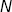 sources/sinks and the 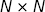 matrix 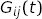 of 2-point correlators created from every combination of source and sink, we can define a new basis of sources that makes the matrix correlator approximately diagonal. Each source in the new basis is associated with an eigenvector 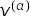 defined by the matrix equation
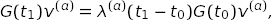
for some 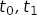. As increase, fewer and fewer states couple to 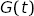. In the limit where only states couple, the correlator
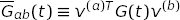
becomes diagonal, and each diagonal element couples to only a single state.
In practice, this condition is only approximate: that is, 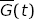 is approximately diagonal, with diagonal elements that overlap strongly with the lowest lying states, but somewhat with other states. These new sources are nevertheless useful for fits because there is an obvious prior for their amplitudes:
prior[a][b]approximately equal to one whenb==a, approximately zero whenb!=aandb<N, and order one otherwise.Such a prior can significantly enhance the stability of a multi-source fit, making it easier to extract reliable results for excited states. It encodes the fact that only a small number of states couple strongly to by time 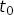, without being overly prescriptive about what their energies are. We can easilty project our correlator onto the new eigen-basis (using
EigenBasis.apply()) in order to use this prior, but this is unnecessary.EigenBasis.make_prior()creates a prior of this type in the eigen-basis and then transforms it back to the original basis, thereby creating an equivalent prior for the amplitudes corresponding to the original sources.Typical usage is straightforward. For example,
basis = EigenBasis( data, # data dictionary keyfmt='G.{s1}.{s2}', # key format for dictionary entries srcs=['local', 'smeared'], # names of sources/sinks t=(5, 7), # t0, t1 used for diagonalization ) prior = basis.make_prior(nterm=4, keyfmt='m.{s1}')
creates an eigen-prior that is optimized for fitting the 2-by-2 matrix correlator given by
[[data['G.local.local'], data['G.local.smeared']] [data['G.smeared.local'], data['G.smeared.smeared']]]
where
datais a dictionary containing all the correlators. Parametertspecifies the times used for the diagonalization: 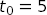 and 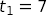. Parameterntermspecifies the number of terms in the fit.basis.make_prior(...)creates priorsprior['m.local']andprior['m.smeared']for the amplitudes corresponding to the local and smeared source, and a priorprior[log(m.dE)]for the logarithm of the energy differences between successive levels.The amplitudes
prior['m.local']andprior['m.smeared']are complicated, with strong correlations between local and smeared entries for the same state. Projecting the prior unto the eigen-basis, however, reveals its underlying structure:p_eig = basis.apply(prior)
implies
p_eig['m.0'] = [1.0(3), 0.0(1), 0(1), 0(1)] p_eig['m.1'] = [0.0(1), 1.0(3), 0(1), 0(1)]
where the different entries are now uncorrelated. This structure registers our expectation that the
'm.0'source in the eigen-basis overlaps strongly with the ground state, but almost not at all with the first excited state; and vice versa for the'm.1'source. Amplitudep_eigis noncommittal about higher states. This structure is built intoprior['m.local']andprior['smeared'].It is easy to check that fit results are consistent with the underlying prior. This can be done by projecting the best-fit parameters unto the eigen-basis using
p_eig = basis.apply(fit.p). Alternatively, a table listing the amplitudes in the new eigen-basis, together with the energies, is printed by:print(basis.tabulate(fit.transformed_p, keyfmt='m.{s1}', eig_srcs=True))
The prior can be adjusted, if needed, using the
dEfac,ampl, andstatesarguments inEigenBasis.make_prior().EigenBasis.tabulate()is also useful for printing the amplitudes for the original sources:print(basis.tabulate(fit.transformed_p, keyfmt='m.{s1}'))
corrfitter.EigenBasisrequires the scipy library in Python.The parameters for creating an eigen-basis are:
Parameters: - data – Dictionary containing the matrix correlator using the original basis of sources and sinks.
- keyfmt – Format string used to generate the keys
in dictionary
datacorresponding to different components of the matrix of correlators. The key for 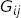 is assumed to bekeyfmt.format(s1=i, s2=j)whereiandjare drawn from the list of sources,srcs. - srcs – List of source names used with
keyfmtto create the keys for finding correlator components in the data dictionary. - t –
t=(t0, t1)specifies thetvalues used to diagonalize the correlation function. Largertvalues are better than smaller ones, but only if the statistics are adequate. When fitting staggered-quark correlators, with oscillating components, choosetvalues where the oscillating pieces are positive (typically oddt). If only onetis given,t=t0, thent1=t0+2is used with it. Fits that usecorrfitter.EigenBasistypically depend only weakly on the choice oft. - tdata – Array containing the times for which there is
correlator data.
tdatais set equal tonumpy.arange(len(G_ij))if it is not specified (or equalsNone).
The interface for
EigenBasisis experimental. It may change in the near future, as experience accumulates from its use.In addition to
keyfmt,srcs,tandtdataabove, the main attributes are:-
E¶ Array of approximate energies obtained from the eigenanalysis.
-
eig_srcs¶ List of labels for the sources in the eigen-basis:
'0','1'...
-
svdcorrection¶ The sum of the SVD corrections added to the data by the last call to
EigenBasis.svd().
-
svdn¶ The number of degrees of freedom modified by the SVD correction in the last call to
EigenBasis.svd().
-
v¶ v[a]is the eigenvector corresponding to sourceain the new basis, wherea=0,1....
-
v_inv¶ v_inv[i]is the inverse-eigenvector for transforming from the new basis back to the original basis.
The main methods are:
-
apply(data, keyfmt='{s1}')¶ Transform
datato the eigen-basis.The data to be transformed is
data[k]where keykequalskeyfmt.format(s1=s1)for vector data, orkeyfmt.format(s1=s1, s2=s2)for matrix data with sourcess1ands2drawn fromself.srcs. A dictionary containing the transformed data is returned using the same keys but with the sources replaced by'0', '1' ...(frombasis.eig_srcs).If
keyfmtis an array of formats, the transformation is applied for each format and a dictionary containing all of the results is returned. This is useful when the same sources and sinks are used for different types of correlators (e.g., in both two-point and three-point correlators).
-
make_prior(nterm, keyfmt='{s1}', dEfac='1(1)', ampl=('1.0(3)', '0.03(10)', '0.2(1.0)'), states=None, eig_srcs=False)¶ Create prior from eigen-basis.
Parameters: - keyfmt – Format string usded to generate keys for
amplitudes and energies in the prior (a dictionary):
keys are obtained from
keyfmt.format(s1=a)whereais one of the original sources,self.srcs, ifeig_srcs=False(default), or one of the eigen-sources,self.eig_srcs, ifeig_srcs=True. The key for the energy differences is generated by'log({})'.format(keyfmt.format(s1='dE')). The default iskeyfmt={s1}. - dEfac (string or
gvar.GVar) – A string orgvar.GVarfrom which the priors for energy differencesdE[i]are constructed. The mean value fordE[0]is set equal to the lowest energy obtained from the diagonalization. The mean values for the otherdE[i]s are set equal to the difference between the lowest two energies from the diagonalization (or to the lowest energy if there is only one). These central values are then multiplied bygvar.gvar(dEfac). The default value, 1(1), sets the width equal to the mean value. The prior is the logarithm of the resulting values. - ampl – A 3-tuple of strings or
gvar.GVars from which priors are contructed for amplitudes corresponding to the eigen-sources.gvar.gvar(ampl[0])is used for for source components where the overlap with a particular state is expected to be large;1.0(3)is the default value.gvar.gvar(ampl[1])is used for states that are expected to have little overlap with the source;0.03(10)is the default value.gvar.gvar(ampl[2])is used where there is nothing known about the overlap of a state with the source;0(1)is the default value. - states – A list of the states in the correlator corresponding to
successive eigen-sources, where
states[i]is the state corresponding toi-th source. The correspondence between sources and states is strong for the first sources, but can decay for subsequent sources, depending upon the quality of the data being used and thetvalues used in the diagonalization. In such situations one might specify fewer states than there are sources by making the length ofstatessmaller than the number of sources. Settingstates=[]assigns broad priors to the every component of every source. Parameterstatescan also be used to deal with situations where the order of later sources is not aligned with that of the actual states: for example,states=[0,1,3]connects the eigen-sources with the first, second and fourth states in the correlator. The default value,states=[0, 1 ... N-1]whereNis the number of sources, assumes that sources and states are aligned.
- keyfmt – Format string usded to generate keys for
amplitudes and energies in the prior (a dictionary):
keys are obtained from
-
svd(data, keyfmt=None, svdcut=1e-15)¶ Apply SVD cut to data in the eigen-basis.
The SVD cut is applied to
data[k]where keykequalskeyfmt.format(s1=s1)for vector data, orkeyfmt.format(s1=s1, s2=s2)for matrix data with sourcess1ands2drawn fromself.srcs. The data are transformed to the eigen-basis of sources/sinks before the cut is applied and then transformed back to the original basis of sources. Results are returned in a dictionary containing the modified correlators.If
keyfmtis a list of formats, the SVD cut is applied to the collection of data formed from each format. The defaul value forkeyfmtisself.keyfmt.
-
tabulate(p, keyfmt='{s1}', nterm=None, nsrcs=None, eig_srcs=False, indent=' ')¶ Create table containing energies and amplitudes for
ntermstates.Given a correlator-fit result
fitand a correspondingEigenBasisobjectbasis, a table listing the energies and amplitudes for the firstNstates in correlators can be printed usingprint basis.tabulate(fit.transformed_p)
where
Nis the number of sources andbasisis anEigenBasisobject. The amplitudes are tabulated for the original sources unless parametereig_srcs=True, in which case the amplitudes are projected onto the the eigen-basis defined bybasis.Parameters: - p – Dictionary containing parameters values.
- keyfmt – Parameters are
p[k]where keyskare obtained fromkeyfmt.format(s1=s)wheresis one of the original sources (basis.srcs) or one of the eigen-sources (basis.eig_srcs). The default definition is'{s1}'. - nterm – The number of states from the fit tabulated.
The default sets
ntermequal to the number of sources in the basis. - nsrcs – The number of sources tabulated. The default causes all sources to be tabulated.
- eig_srcs – Amplitudes for the eigen-sources are
tabulated if
eigen_srcs=True; otherwise amplitudes for the original basis of sources are tabulated (default). - indent – A string prepended to each line of the table.
Default is
4 * ' '.
-
unapply(data, keyfmt='{s1}')¶ Transform
datafrom the eigen-basis to the original basis.The data to be transformed is
data[k]where keykequalskeyfmt.format(s1=s1)for vector data, orkeyfmt.format(s1=s1, s2=s2)for matrix data with sourcess1ands2drawn fromself.eig_srcs. A dictionary containing the transformed data is returned using the same keys but with the original sources (fromself.srcs).If
keyfmtis an array of formats, the transformation is applied for each format and a dictionary containing all of the results is returned. This is useful when the same sources and sinks are used for different types of correlators (e.g., in both two-point and three-point correlators).
Fast Fit Objects¶
-
class
corrfitter.fastfit(data, prior, model, svdcut=None, ratio=True, osc=False)¶ Fast fit for the leading component of a
Corr2.This function class estimates
En[0]andan[0]*bn[0]in a two-point correlator:Gab(t) = sn * sum_i an[i]*bn[i] * fn(En[i], t) + so * sum_i ao[i]*bo[i] * fo(Eo[i], t)where
snandsoare typically-1,0, or1andfn(E, t) = exp(-E*t) + exp(-E*(tp-t)) # tp>0 -- periodic or exp(-E*t) - exp(-E*(-tp-t))# tp<0 -- anti-periodic or exp(-E*t) # if tp is None (nonperiodic) fo(E, t) = (-1)**t * fn(E, t)The correlator is specified by
model, andprioris used to remove (marginalize) all terms other than theEn[0]term from the data. This gives a corrected correlatorGc(t)that includes uncertainties due to the terms removed. Estimates ofEn[0]are given by:Eeff(t) = arccosh(0.5*(Gc(t+1)+Gc(t-1))/Gc(t)),
The final estimate is the weighted average
Eeff_avgof theEeff(t)s for differentts. Similarly, an estimate for the product of amplitutes,an[0]*bn[0]is obtained from the weighted average ofAeff(t) = Gc(t)/fn(Eeff_avg, t).
If
osc=True, an estimate is returned forEo[0]rather thanEn[0], andao[0]*bo[0]rather thanan[0]*bn[0]. These estimates are most reliable whenEo[0]is smaller thanEn[0](and so dominates at larget).The results of the fast fit are stored and returned in an object of type
corrfitter.fastfitwith the following attributies:-
E¶ Estimate of
En[0](orEo[0]ifosc==True) computed from the weighted average ofEeff(t)forts inmodel.tfit. The prior is also included in the weighted average.
-
ampl¶ Estimate of
an[0]*bn[0](orao[0]*bo[0]ifosc==True) computed from the weighted average ofAeff(t)forts inmodel.tfit[1:-1]. The prior is also included in the weighted average.
-
chi2¶ chi[0]is thechi**2for the weighted average ofEeff(t)s;chi[1]is the same for theAeff(t)s.
-
dof¶ dof[0]is the effective number of degrees of freedom in the weighted average ofEeff(t)s;dof[1]is the same for theAeff(t)s.
-
Q¶ Q[0]is the quality factor Q for the weighted average ofEeff(t)s;Q[1]is the same for theAeff(t)s.
-
Elist¶ List of
Eeff(t)s used in the weighted average to estimateE.
-
ampllist¶ List of
Aeff(t)s used in the weighted average to estimateampl.
Parameters: - data (dictionary) – Input data. The
datatagfrom the correlator model is used as a data key, withdata[datatag]being a 1-d array ofgvar.GVars corresponding to the correlator values. - prior (dictionary) – Bayesian prior for the fit parameters in the correlator model.
- model (Corr2) – Correlator model for correlator of interest. The
ts inmodel.tfitmust be consecutive. - osc (Bool) – If
True, extract results for the leading oscillating term in the correlator (Eo[0]); otherwise ignore.
In addition an svd cut can be specified, as in
corrfitter.CorrFitter, using parametersvdcut. Also the type of marginalization use can be specified with parameterratio(seecorrfitter.CorrFitter).-